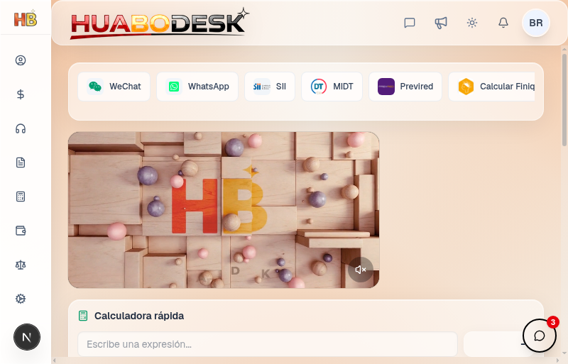
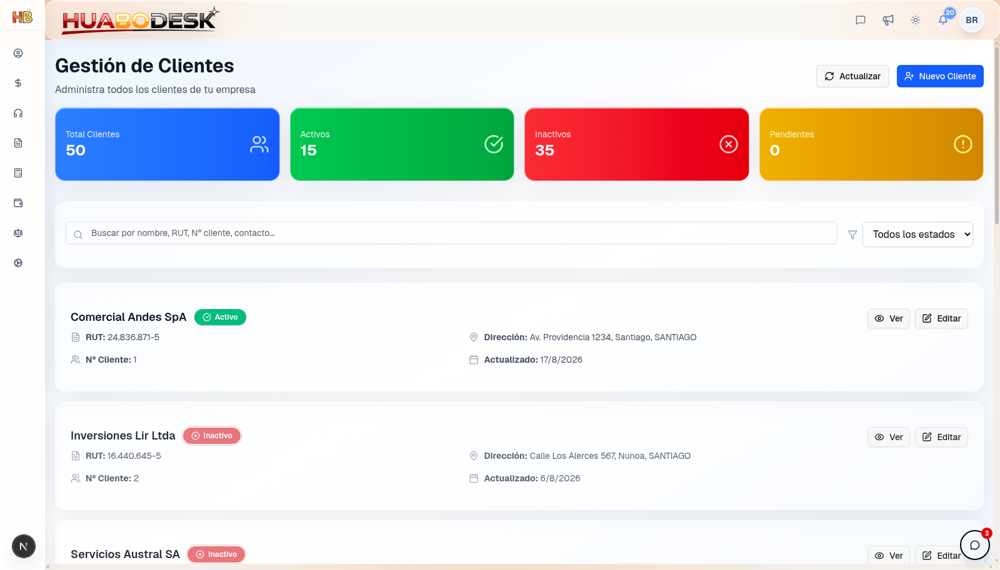

Desarrollador full-stack y analista IT. Construyo sistemas empresariales reales: plataformas de gestión, automatización de portales externos, juegos online y herramientas con IA. No hago demos — hago productos con tests, CI y documentación que operan con empresas reales.
Full-stack developer and IT analyst. I build real enterprise systems: management platforms, external-portal automation, online games and AI tooling. I don't build demos — I build products with tests, CI and docs that run for real businesses.
De plataformas empresariales en producción a juegos online y herramientas con IA.
From production enterprise platforms to online games and AI tooling.
🏢 HuaboDesk
EN PRODUCCIÓNIN PRODUCTION
Suite empresarial contable integral para el mercado chileno. 14+ módulos, 429+ rutas API, 186+ tablas PostgreSQL operando con empresas reales.
All-in-one accounting & business management suite for the Chilean market. 14+ modules, 429+ API routes, 186+ PostgreSQL tables serving real businesses.
429+
API routes
186+
DB tables
70+
IPC channels
14k
graph nodes
143
test files
14+
módulos/modules

Panel principal: accesos, calendario y utilidadesMain dashboard: shortcuts, calendar and utilities

Gestión de clientes con búsqueda y estadosClient management with search and statuses
Base de datos: PostgreSQL 17 — 186+ tablas, 27 funciones SQL, pgvector para búsqueda semántica
Multi-proceso (PM2): servidor web + WebSocket independiente + indexación RAG + workers de fondo (vigilancia documental, retención de correo, conciliación RAG, auto-deploy)
Desktop (Electron 28): 70+ canales IPC con whitelist, automatización web integrada (Playwright), bandeja de sistema, auto-actualización NSIS, sincronización de archivos con motor Rust, sistema multi-ventana (cada módulo como ventana OS independiente)
Contabilidad: libros de compras/ventas con edición inline, reglas por cuenta, ajustes, declaraciones mensuales, exportación CSV, estado financiero con informes
Remuneraciones: empleados v2, liquidaciones de sueldo, finiquitos, alta con generador de contratos y documentos, horarios, asistencia, evaluaciones
HeChat — chat de equipo: grupos, @mentions, stickers, emojis, typing indicator, búsqueda, reacciones, adjuntos con visor, citas, acceso por empresa
Correo corporativo: webmail completo — compose, búsqueda global, cola de reintentos con panel de fallos, retención automática, operaciones admin
Motor de workflows: timeline unificado tipo chat, estados con acciones, prioridades, comentarios con reacciones, adjuntos, asignación multiusuario, recordatorios
Operación: Gantt de proyectos, calendario con eventos + feriados, coordinación de equipo, atención de clientes con reasignación de cartera, broadcast global
Documentos: gestión con watcher en tiempo real, Dropbox, búsqueda IA RAG + pgvector, extracción documental con IA
IA de autollenado (Empleados v2): worker en segundo plano con cola de jobs que lee los documentos de un empleado (PDF/escaneos), los procesa con OCR y extracción IA, y rellena automáticamente su ficha — reintentos con backoff, control de intentos máximos, panel de estado y re-encolado manual
Pipeline OCR triple motor:Tesseract + EasyOCR + Vision API con fallback automático entre motores, renderizado de PDFs, extracción de identificadores y normalización
Generador de documentos y contratos: motor de plantillas DOCX (docxtpl/Jinja2) con post-procesamiento XML — genera contratos laborales y documentos legales personalizados desde los datos del empleado/empresa, ventana propia en el cliente de escritorio con selección de tipo, vista previa y guardado
Sincronización Dropbox: scanners por empresa y de RRHH con indexación automática — submenú de documentos de empleados con exportación, control de vencimientos y actividad reciente
Otras automatizaciones: worker pool de verificación fiscal con lectura de archivos, bus en tiempo real de cobros, retención de correo, backups DB programados, deploy con lock remoto + watchdog, IA de ajedrez integrada
Administración: equipos y roles, logs de auditoría, registro con aprobación, configuración global, health checks, geocoding, integración stock photos
Ingeniería avanzada
Advanced engineering
Grafo de conocimiento del codebase: 14.009 nodos, 46.142 aristas, 512 comunidades
Suite de tests: 143 archivos (Vitest + Playwright)
Sistema de automatización web adaptativo que ejecuta operaciones en portales y sistemas externos usando el navegador real del usuario vía extensión de Chrome — sin Playwright, sin headless. Sesiones logueadas reales, fingerprint genuino, evita CAPTCHAs y detección de bots.
Adaptive web automation system that performs operations on external portals and systems using the user's real browser via a Chrome extension — no Playwright, no headless. Real logged sessions, genuine fingerprint, bypasses CAPTCHAs and bot detection.
MV3
Chrome Ext
WS
remote control
MCP
AI-ready
0
install (MB)
Qué hace
What it does
Ejecuta operaciones automatizadas en sistemas y portales externos en nombre del usuario: navegación, llenado de formularios, descarga de documentos, extracción de datos
Usa el navegador real del usuario con su perfil y sesión logueada — fingerprint genuino, imposible de distinguir de un humano
Scraping adaptativo: localiza elementos aunque la estructura del sitio cambie — selectores resilientes con recuperación automática
Arquitectura
Architecture
Extensión Chrome MV3: content scripts con capacidad de operar en múltiples dominios
Servidor Node: API HTTP + WebSocket para disparar operaciones remotamente desde la plataforma
MCP server: controlable por asistentes de IA (Claude, Cursor, Windsurf) — los agentes ejecutan operaciones de navegador como herramientas nativas
Zero-install: solo la extensión, sin descargar navegadores (~300–500 MB ahorrados vs Playwright)
TypeScriptChrome Extension MV3WebSocketMCPNode.js
💰 PayBoard
RUST + TAURI 2
Panel de administración financiera de escritorio para gestionar los cobros mensuales de carteras de ~1.000 clientes de contabilidad. Construido como aplicación 100% nativa: un binario único en Rust con webview del sistema.
Desktop financial administration panel managing monthly collections for ~1,000-client accounting portfolios. Built as a 100% native application: a single Rust binary with the system webview.
21
columnas tabla
~90
conceptos
100%
Rust domain
1
binario único
Motor de dominio (pb-core, Rust puro sin dependencias)
Domain engine (pb-core, pure Rust, zero deps)
Propagación de saldos mes a mes: deuda N → N+1, sobrepago → abono — saldos jamás editables a mano
Anticipos con signo (negativos = a favor del cliente), pagos con valor absoluto
Parseo monetario estricto (formato 1.500.000, rechazo de basura — nunca dígitos parciales)
Golden tests de paridad congelando cada regla de negocio como contrato ejecutable
Funcionalidad
Features
Tabla mensual estilo hoja de cálculo con 21 columnas de conceptos de cobro (impuestos, contabilidad, previsión, visas, certificados, multas, trámites, patentes, rentas y más), coloreado en 3 niveles, menú contextual, navegación tipo Excel
Comprobantes PDF individuales y batch con fuente CJK embebida (Noto Sans SC) para conceptos bilingües ES/ZH
Modo colaborativo multi-operador: cola de aprobaciones, presencia, changelog, notificaciones
Verificación tributaria cruzada: cruce automático del impuesto declarado vs. lo cobrado
Import/export Excel, atajos configurables, roles granulares, sistema de diseño propio
Por qué nativo
Why native
Elimina servidor Node + Chromium embebido → binario de unidades de MB, RAM ~80–150 MB, arranque sub-segundo
MMORPG online con mundo original (Kesshō). Cliente TypeScript, gateway de borde en Rust (tokio), servidor en tiempo real protocolo Tibia 8.60, MariaDB. Progresión dual: nivel + rango por Pruebas de Umbral no combativas.
Online MMORPG with an original world (Kesshō). TypeScript client, Rust edge gateway (tokio), real-time Tibia 8.60 protocol server, MariaDB. Dual progression: combat levels + rank via non-combat Threshold Trials.
Plataforma humanitaria sin fines de lucro: registro y búsqueda de personas tras el terremoto de Venezuela 2026. En producción. Mapa interactivo, búsqueda por cédula, flujo optimizado para emergencias.
Non-profit humanitarian platform: registry and search for missing persons after the 2026 Venezuela earthquake. Live in production. Interactive map, ID search, emergency-optimized flow.
Generador de mapas con IA: describe un mapa en texto → obtén un .otbm listo para producción. Terreno Perlin multi-octava (11 biomas, ríos, islas), mazmorras BSP multi-piso (5 tipos de sala), pueblos con 3 estilos y NPCs. Python puro sin dependencias + port Rust.
AI map generator: describe a map in text → get a production-ready .otbm. Multi-octave Perlin terrain (11 biomes, rivers, islands), multi-floor BSP dungeons (5 room types), towns with 3 styles and NPCs. Zero-dependency Python + Rust port.
Parchís online estilo Ludo Club: WebRTC P2P sin servidor de juego (bot toma el asiento si alguien se desconecta), bots con personalidad, pasar-y-jugar, equipos 2v2, stickers, sonidos sintetizados, video-chat opcional. Bilingüe ES/EN, PWA mobile-first.
Online Ludo Club-style parchís: WebRTC P2P with no game server (a bot takes the seat on disconnect), personality bots, pass-and-play, 2v2 teams, stickers, synthesized sounds, optional video chat. Bilingual, mobile-first PWA.
Gantt de gestión de proyectos: fases en días hábiles con feriados legales chilenos, progreso automático desde checklists (promedio ponderado), vista pública + modo admin, edición desde el Gantt. SQL parametrizado a mano sobre SQLite.
Project management Gantt: business-day phases with Chilean statutory holidays, automatic progress from checklists (weighted average), public read-only view + admin mode, edit-from-Gantt popups. Hand-written parameterized SQL over SQLite.
Next.js 16React 19SQLiteRadix UIVitest
¿Construimos algo juntos?
Let's build something together
Desarrollo full-stack · sistemas Rust · automatización · integraciones IA
Full-stack development · Rust systems · automation · AI integrations